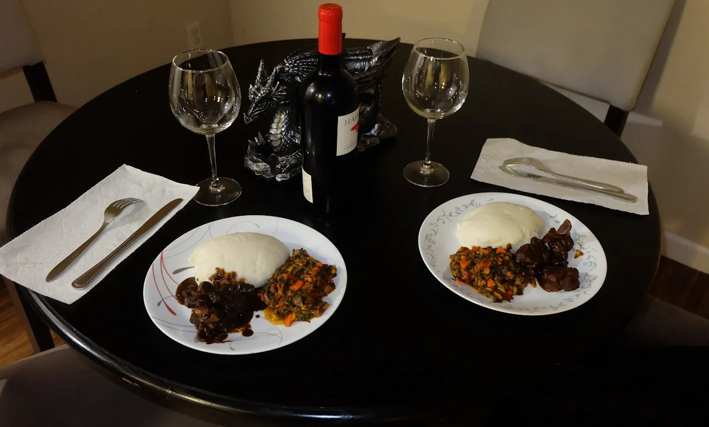

Live → Blog
January 22, 2020

Did I tell you about the intervention my sisters held for me about a year ago? I was home for Christmas. They expressed concern that I had not introduced any suitable woman to them. They asked if I was afraid of women, or perhaps, if I was gay. It was good to know that if I were gay, they would have accepted me. Thinking about it, I now wonder why they could not extend the same generosity to my unusual -at least for my family - approach to dating and procreation. They feel I should find someone soon so I can produce an heir to my nonexistent estate. I disagree with the baby making agenda since I am a baby myself, but of late I have realized a deep desire for a romantic companionship. It is hard when you are romantically awkward like myself, and my prerequisites for dating me do not make it any easier. That is why I am unable to find romantic companions online via the modern platforms. But it does not mean I do not try them every now and then. Perhaps inspired by my sisters' intervention or good old loneliness or even boredom, I connected with a lovely woman on one of the platforms recently. I was able to convince her to go see a play at a theater, where most of the patrons are senior citizens. We saw a well-done rendition of Pride and Prejudice. But my favorite of our hangouts, was making her a lovely Botswana dinner.
A great dinner starts with the selection of the meat. My guest had indicated an interest in trying African cuisine. In this area, that often means West African food or Ethiopian food. I was going to make her a typical meal I would eat at home: pap, morogo, le nama. But first I had to pick the meat. I chose goat. I get all my meat from a Halal store two cities from where I live. I washed the meat, to remove any blood residues and for my own peace of mind. We wash our meat where I come from, even though we are going to cook it thoroughly at sufficiently high enough temperatures. Then I boiled it with salt and Knorrox Chilli Beef stock. My kitchen is full of spices from home, because a meal is incomplete without quality spices. Entire countries were colonized for spices, so I hope you can understand why I risk the future wellbeing of my grandkids by taking 6 flights on a roundtrip journey to restock in Botswana twice a year. Yet, I had to hold back from using them. Goat meat is very flavorful by itself, and rarely requires any spices. I started cooking about 2 hours before the dinner time since that is how long I like to cook my goat meat at B+ heat.
To make the morogo, what the people here might call greens, I started by slicing the spinach into coleslaw-thin slices. I have never understood greens in the US, they are usually chunky and unpleasant to look at. It is as though they chop their veggies with an axe. Thankfully, my dear friend KG bought me a nice knife set. After slicing the spinach, I chopped purple onion, my colorful assortment of bell peppers, carrots, some thai peppers, and serrano peppers. Before using each vegetable, it was thoroughly washed. After chopping them, I soaked them in water for a few minutes. Then I added a bit of olive oil to the pot I was using - also a lovely gift from KG. Then I took the chopped veggies out of the water and put them into the pot before the oil heated up. The idea is to cook the veggies with the bit of oil and the tiny drops of water that remain after being soaked for a short while. I added iodized salt - because I read somewhere that Iodine matters - and mother-in-law spice to begin with. As the moisture heated up, I cut up a tomato because morogo needs some tomato sweetness. Then I added the tomato when it began to boil. I also added Robertsons' Rajah Mild Curry Power. There is nothing as sweet as the smell of food from home cooking on the stove.
My readers from overseas, specifically overseas in Botswana, might be surprised to see me make pap. For years I was sad that I could not find maize meal here. I know those who do not know, often refer me to corn flour. The tragedy! Thankfully some months ago, one of my former romantic friends told me I could buy maize meal on Amazon. It is a South African brand - the third best, but beggars are not choosers. Amazon knows we are not choosers and they charge $13 per kilogram. With $13, I can buy 37.5 kg of the best maize meal back home. That is 3 bags of 12.5kg each. But I guess it is worth it. Maize meal, despite its hefty price tag, is meant to be plain. It is there to enhance the flavors of the food it accompanies. So it is prepared in a very simple manner. First I boiled the water, added a bit of salt and then I added some powder and stirred it into a soft porridge. I covered the pot and let it simmer for a minute or two. In part because it is very dangerous when it shoots tiny pockets of hot maize meal lava in the air at the beginning of the mixing of the flour with the boiling water. Then I added more flour to thicken the pap. Then I lowered the heat and let it cook slowly.
She was kind enough to bring a fancy bottle of wine. It was not cheap by any means, a perfect companion for the meal. After all a meal cooked with a priceless maize meal and spices that I had to fly over 3 oceans and 3 continents to find, cannot be paired with cheap wine. The meal was great - and I rarely think my food is great. She was also impressed, although she looked like the food was too spicy for her - and she is someone who self describes as one with a high spice tolerance. I was able to break out of my caveman shell and have a date, organized with modern technology. Not only that, I was able to share my culture with someone who was curious. But even then, I could not convince myself to ask her to potentially mother my heir in times to come. She is an amazing woman, but my heart was not there. My recent visit to Detroit made me realize that with all my dating experience, I am best when dating within my own people. I am all about cultural exchange, but for me personally, I realize I am too traditional to be with someone who does not understand the cultural roots that anchor me. Here is to the hope of finding that companionship.
← Return to Blog